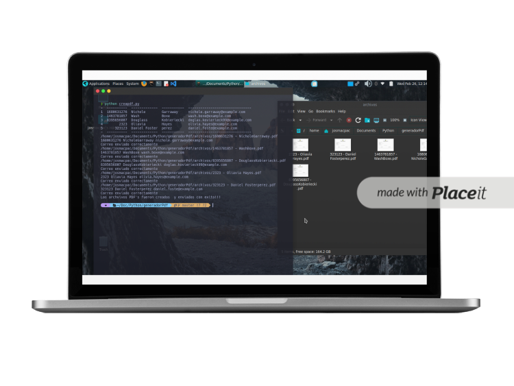

Proyectos

Sistema de Monitoreo - Docker/Ansible
Sistema de monitoreo de VM y servidores Linux. Mediante Script en Bash, Docker y Ansible para automatizacion.
Ver proyecto
Aplicación Gestión Clientes y Reservaciones
Aplicación web para registrar clientes y agendar citas de taller. Backend en Python (Flask) con base de datos MySQL/SQLite, login seguro y gestión de reservas para optimizar la eficiencia del taller y mejorar la experiencia del cliente.
Ver proyecto
Desplegando Servidor Nginx en Docker
Despliegue de una aplicación Flask detrás de un servidor NGINX en Raspberry Pi Zero 2 W, utilizando Docker y Portainer para la gestión de contenedores.
Ver proyecto
Configurando Túnel Cloudflare
Exposición selectiva de servicios web alojados en Docker mediante un túnel seguro en Cloudflare, creando un laboratorio de prácticas de administración de servidores y seguridad en Raspberry Pi Zero 2 W.
Ver proyecto
Employee & Schedule Manager
Aplicación web para la gestión de empleados y la generación de horarios semanales, con funciones CRUD y administración de datos.
Ver proyecto
Generación Automática de Certificados
Aplicación en Python que automatiza la creación y envío por correo de certificados en formato PDF, extrayendo datos desde un archivo Excel.
Ver proyecto